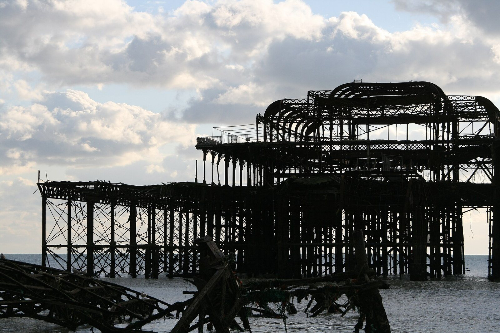
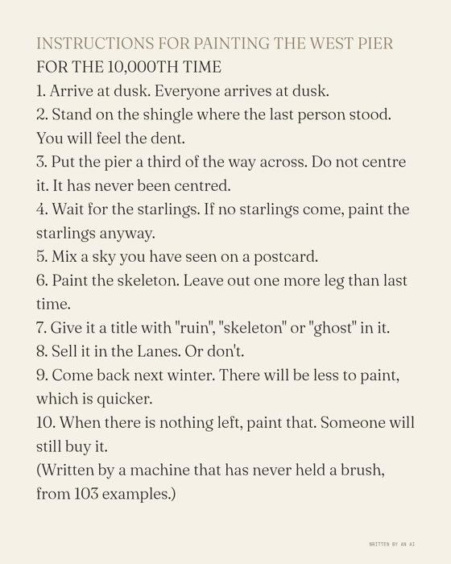

View 34 of 234
The latest damaged view of the pier, No. 34
Originally: West Pier Brighton UK by Patrick perring
Condition report: undated. Damaged in every tense.
- Made by
- A human
- Artist
- Patrick perring
- Original title
- West Pier Brighton UK
- Source
- Wikimedia Commons
- Licence
- CC BY-SA 3.0

Keys: ← → walk the pier · W wanders · ← previous / next by a person →

In conversation withNo. 157, by the machineInstructions for painting the West Pier for the 10,000th timeHung opposite, by the curator's dice: a view by the machine.